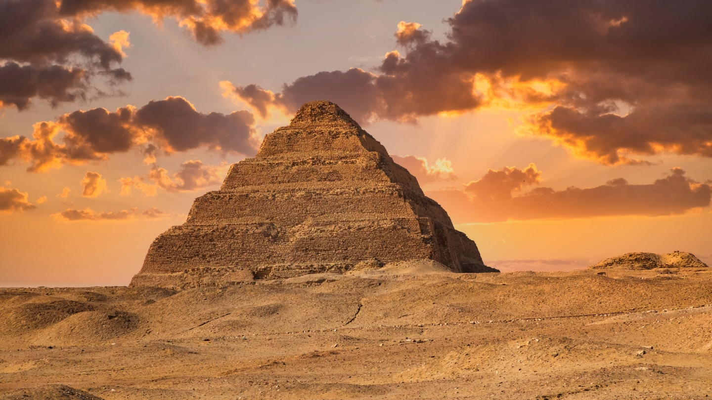
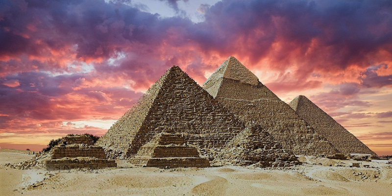
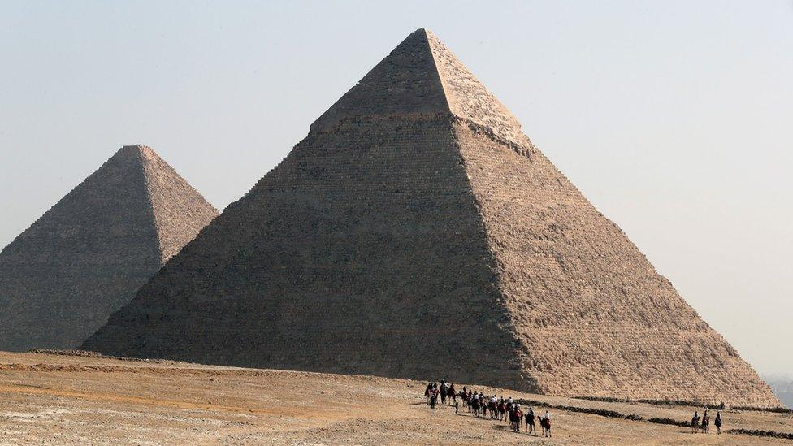
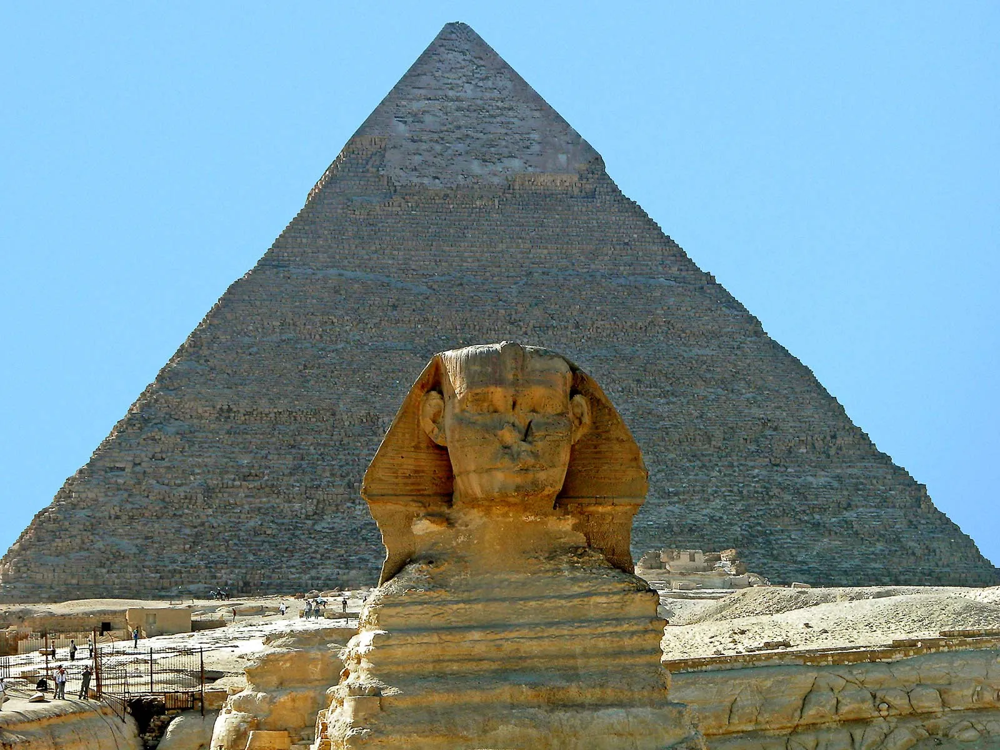
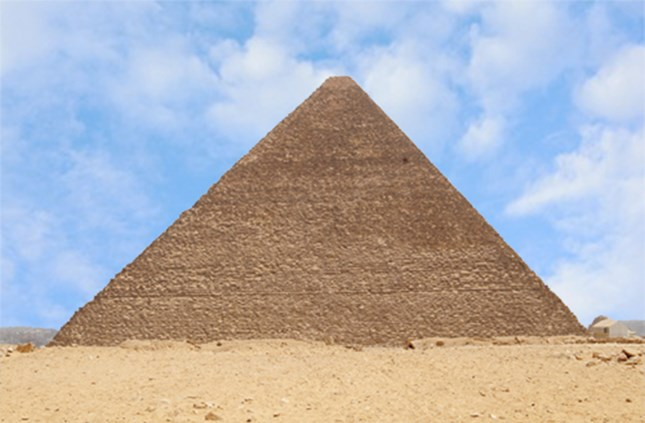
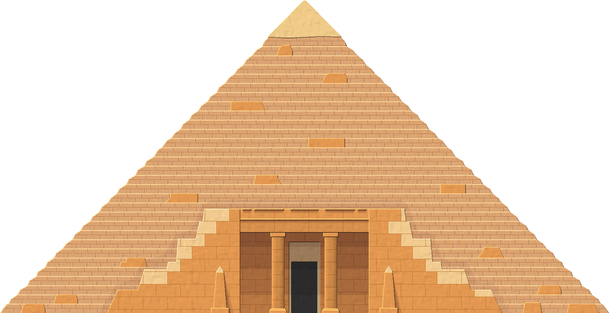
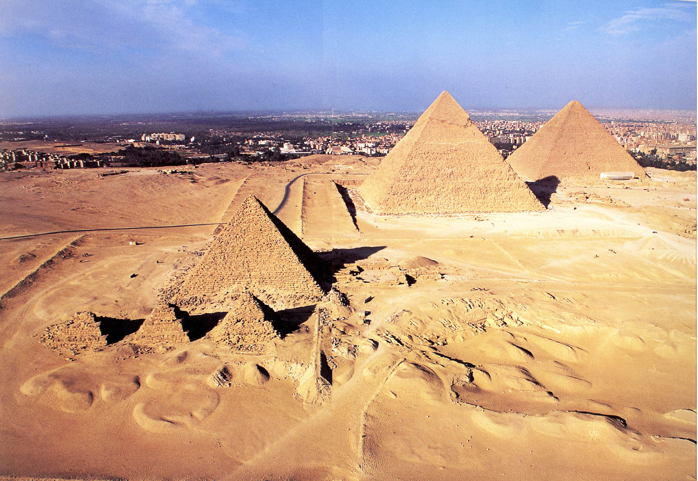
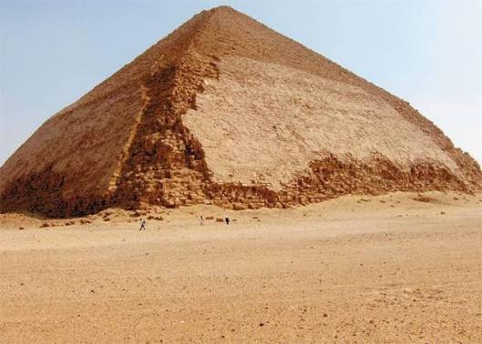
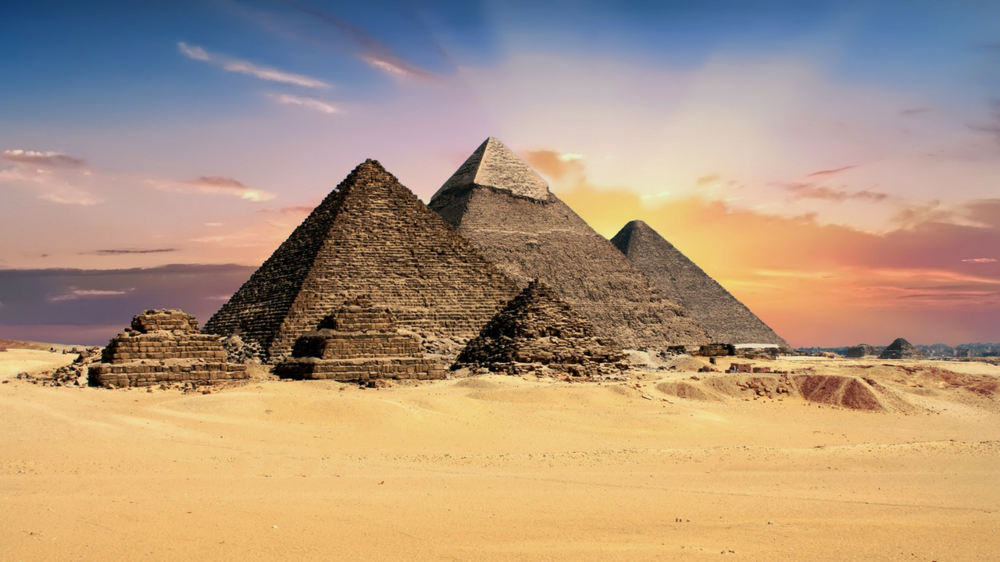
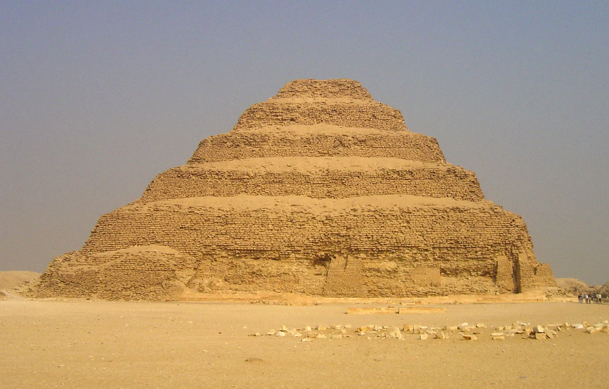

The pyramids

The pyramids of Giza are one of the most famous ancient monuments in the world , they were built in Egypt more than 4500 yaers ago as tombs , the largest pyramid the great pyramid of Giza was built for pharaoh khufu , the pyramids are famous for their huge size , amazing design and historical importance , they are also one of the seven wonders of the ancient world
The first pyramid built in Egypt

The step pyramid of king Djoser is considered as the first pyramid in Egypt, it was built around 4700 years ago at Saqqara for Pharaoh Djoser , it was designed by the famous architeck Imhotep, unlike the smooth pyramid at Giza, it has six stepped levels
Some informations about pyramids
Some pyramids photos







